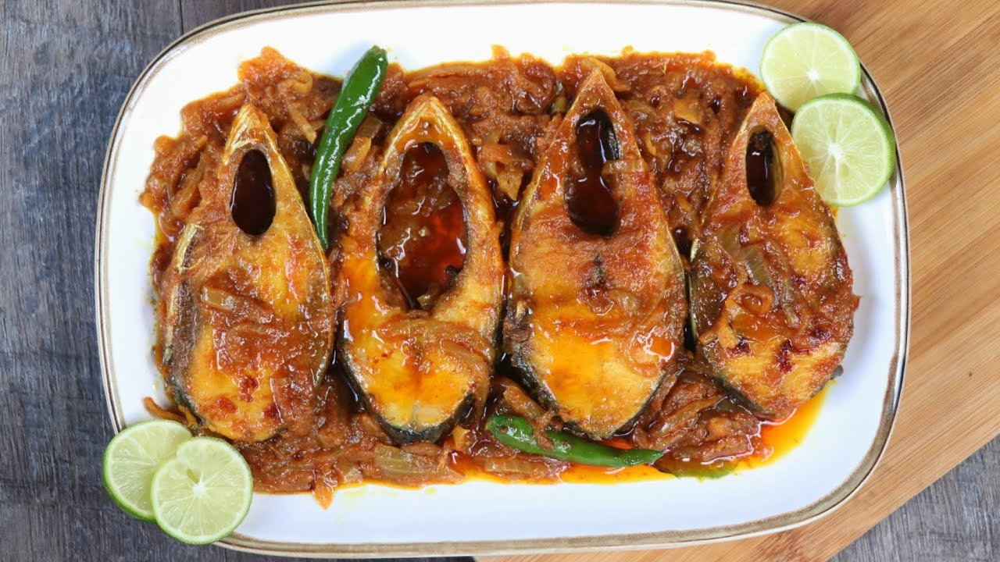

Home
Ilish Bhuna

Description
Ilish Bhuna is a traditional Bangladeshi dish made with Hilsa (Ilish) fish, known for its rich taste and soft
texture. This dish is prepared by slow-cooking the fish with a blend of spices, onions, mustard oil, and green
chilies, resulting in a thick, flavorful gravy. The bold flavors of mustard oil and fresh spices make this dish
a beloved choice, often served with plain rice.
Ingredient
Main Ingredients:
- 4-5 pieces Hilsa (Ilish) fish
- ½ cup mustard oil
- 2 large onions (thinly sliced)
- 1 tbsp ginger paste
- 1 tbsp garlic paste
- 1 tsp turmeric powder
- 1 tsp red chili powder (adjust to taste)
- 1 tsp coriander powder
- ½ tsp cumin powder
- ½ tsp garam masala powder (optional)
- 1 tsp salt (or to taste)
- 2-3 green chilies (slit)
- ½ cup water (as needed)
- Fresh coriander leaves (for garnish)
Steps to Cook Ilish Bhuna
Step 1: Prepare the Fish
- Wash the Hilsa fish pieces gently and pat them dry.
- Rub them with turmeric powder and salt. Let them sit for 10 minutes.
Step 2: Fry the Fish
- Heat mustard oil in a pan until it starts to smoke slightly. Reduce the heat.
- Fry the fish pieces lightly for 1-2 minutes on each side (avoid over-frying to keep them soft). Remove
and set aside.
Step 3: Prepare the Masala
- In the same oil, add sliced onions and sauté until golden brown.
- Add ginger paste, garlic paste, red chili powder, coriander powder, cumin powder, and garam masala. Stir well and cook for 2-3 minutes until the oil starts to separate.
- Add ½ cup water and bring it to a simmer.
Step 4: Cook the Fish in the Gravy
- Gently place the fried Hilsa fish into the gravy.
- Add green chilies and cover the pan. Let it cook on low heat for 5-7 minutes, allowing the flavors to infuse.
- Flip the fish pieces carefully to avoid breaking.
Step 5: Serve & Enjoy
- Once the gravy thickens, remove from heat and garnish with fresh coriander leaves.
- Serve hot with steamed rice for a classic Bangladeshi meal.